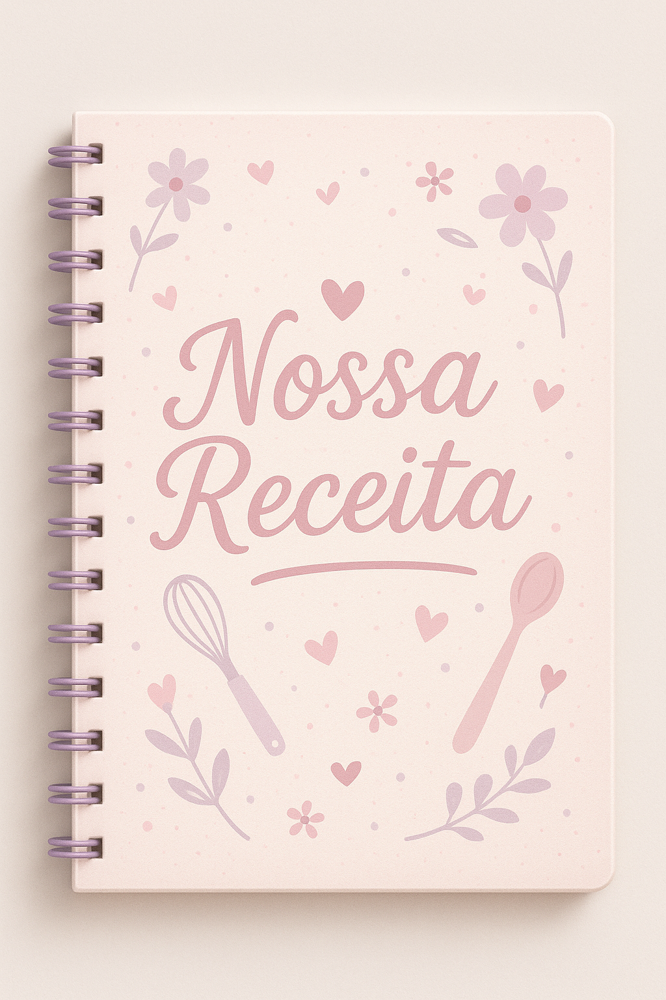

Receitas para Iniciantes 🍳

Receitinhas simples, rápidas e cheias de amor para você que está começando na cozinha.
"Cada receita é um carinho em forma de sabor."
Aulas em VÃdeo 🎥
Assista tutoriais fofos, repletos de dicas incrÃveis, truques e muito carinho da Isa!
"Na cozinha da Isa, o amor é o principal ingrediente."
Receitas Avançadas 🥘
Explore pratos sofisticados que encantam e surpreendem quem você ama! 💖